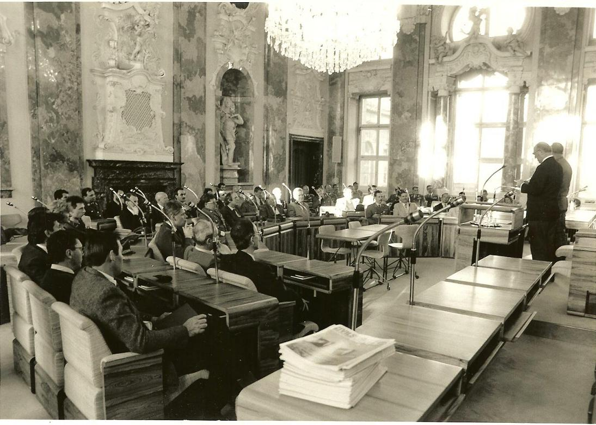

El Grupo Asesor Internacional de Operaciones de Búsqueda y fue establecido en 1991. Rescate (INSARAG) El establecimiento de este grupo siguió las iniciativas de los equipos internacionales especializados en búsqueda y rescate urbano (USAR) que operaron juntos en el terremoto de México de 1985 y en el terremoto de Armenia de 1988. Para no duplicar las estructuras existentes, el grupo fue creado bajo el marco de la coordinación humanitaria existente en las Naciones Unidas (ONU). Para ello, la Secretaría del grupo recayó dentro de la Sección de Alianzas de respuesta, RPS (por sus siglas en Inglés), de la Subdivisión de Apoyo a la Respuesta a Emergencias (ERSB) de la Oficina de Coordinación de Asuntos Humanitarios (OCHA) en Ginebra.
Bajo esta sombrilla de la ONU, INSARAG ha conseguido con éxito la creación de una Resolución de la Asamblea General de la ONU sobre el "Fortalecimiento de la Eficacia y de la Coordinación de la Asistencia Internacional a las Operaciones de Búsqueda y Rescate en Zonas Urbanas" en el 2002. Esta resolución es ampliamente considerada la base del progreso logrado por el grupo en las últimas dos décadas.
El propósito principal de INSARAG es facilitar la coordinación entre los distintos equipos USAR internacionales que están a la disposición para su despliegue a países afectados por eventos devastadores que hayan causado colapsos estructurales, principalmente debido a terremotos. El grupo logra esta coordinación mediante la comunicación facilitada entre estos grupos antes de que ocurran dichos eventos. Las reuniones de los equipos que han trabajado de manera conjunta en desastres reales han resultado en varios acuerdos prácticos. Gran parte de los detalles de cómo estos equipos han logrado trabajar juntos se pueden encontrar en las Guías de INSARAG, un documento vivo que esboza los principios acordados dentro del grupo.
Libro “20 años de INSARAG” (English, Spanish)
Video del Aniversario de los 20 años de INSARAG